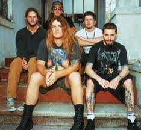

 Acid Bath com certeza faz parte das mais influentes bandas do gênero. Lançada em 1991, em Houma(Luisiana), com elementos do Death
metal, hardcore, Gothic Rock, Blues e Rock psicodélico.
A banda se manteve em atividade por 6 anos, encerrando a atividade após a morte do baixista Audie Pitre em uma colisão de trânsito em janeiro de 1997.
Entre 1991 e 1997 produziram apenas dois albums (When the Kite String Pops e Paegan Terrorism Tatics) + demos.
O vocalista Dax Riggs classificou seu som como "death rock". Em outra entrevista, o guitarrista Sammy Duet descrevia o som como "gothic hardcore".
Acid Bath foi uma encarnação de duas bandas, Dark Karnival que contou com Audie Pitre, Sammy Duet e Tommy Viator e a banda Golgotha que contava com Dax
Riggs, Mike Sanchez, Jimmy Kyle e Jerry Businelli.
When the Kite String Pops
Influenciados pelo thrash metal, além de bandas e artistas como Black Sabbath, Alice Cooper, Celtic Frost, Carcass e Darkthrone, eles gravaram sua demo Hymns of the Needle Freak com seu empresário e produtor Keith Falgout em 1993. A força da demo lhes rendeu um contrato com a Rotten Records, uma
gravadora independente. Então lançaram seu primeiro álbum oficial "When the Kite String Pops" em 1994.
Enquanto músicas mais brandas como Scream of the Butterfly reforçam passagens pelo Country e Blues, outras como Finger Paintings of the Insane com elementos do
Doom Metal.
A arte do álbum é um autorretrato feito pelo serial killer John Wayne Gacy enquanto estava na prisão aguardando
sua execução, chamada "Skull Clown", na qual ele se descreve como seu alter-ego palhaço, "Pogo the Clown".
O uso de obras de arte por um serial killer condenado causou polêmica, com o presidente da Rotten Records, Ron Peterson, defendendo a decisão dizendo
"É a América - você deve ser capaz de fazer o que quiser".
No Double Live Bootleg! de 2002, o vocalista Dax Riggs apresentou a música "Tranquilized" dizendo: "Esta música é sobre ficar chapado de qualquer maneira
que você faça, e chutar a terra debaixo de você" e "Cheap Vodka" dizendo: "Esta música é sobre ficar bêbado e matar coisas, sangue, sexo e blasfêmia."
"Toubabo Koomi" é Swahili para "terra dos canibais brancos". Foi a única música do Acid Bath que foi transformada em um videoclipe. Segundo o guitarrista
Sammy Duet, o jacaré que apareceu no vídeo acabou mordendo o rosto de alguém. A música "God Machine" começa com uma introdução de palavras faladas por
Riggs.
Paegan Terrorism Tactics é o segundo e último álbum de estúdio da banda, foi escrito enquanto a banda estava em turnê,
explora a musicalidade tanto Acustica como Black Metal e Drone music.
As letras deste álbum são poéticas e mostram ainda mais o senso de humor sombrio de Dax Riggs. "Paegan Love Song" a primeira faixa do álbum,
segundo Riggs, faz referências a quando a
banda estava visitando uma praia na Flórida, onde algumas pessoas ofereceram à eles um entorpecente chamado Angel's Trumpets. Riggs disse que o efeito da droga durou
dias, e o trecho "morrer foi tão bom hoje" e "Comer flores mortas sangrando em um
estranho torpor" entre outras linhas da música fazem referência à experiência de acordar na praia com esse estado aparentemente estranho de embriaguez.
O poema / faixa oculta em Dead Girl "Ode of the
Paegan" (começa em 22:29) às vezes é referido como "The Beautiful Downgrade" e aparecem como tal nos livros de poesia de Riggs. A trilha oculta junto com a faixa
"Old Skin" compõem os dois poemas falados no álbum.
A capa do álbum continuou a tendência provocativa usando obras de arte criadas pelo proponente da eutanásia Jack Kevorkian, enquanto no México, a banda tirou uma foto
negativa da cabeça de um animal decapitado e
originalmente pretendia usar isso como capa do álbum. Essa arte inicial pode ser encontrada em
vários sites na internet.
Nenhum dos albuns ganhou sucesso no mainstream, mas ambos os álbuns ganharam
um alto grau de aclamação underground, considerados clássicos do underground.
Enquanto rumores de outro álbum circulavam após o fim da banda, nada de novo surgiu. Sammy Duet possui uma fita dele e Mike Sanchez com riffs para um
possível terceiro álbum do Acid Bath. Ele mencionou esta fita em sua entrevista com "Does It Doom?". A fita foi rotulada como "Rat Poison" porque nenhum deles
conseguiu criar um nome para o álbum. Um dos membros viu um pouco de veneno de rato em uma caixa no espaço de ensaio e disse "apenas chame isso de veneno de
rato".
Em 2005, outro álbum composto por suas demos, Demos: 1993–1996, foi lançado.